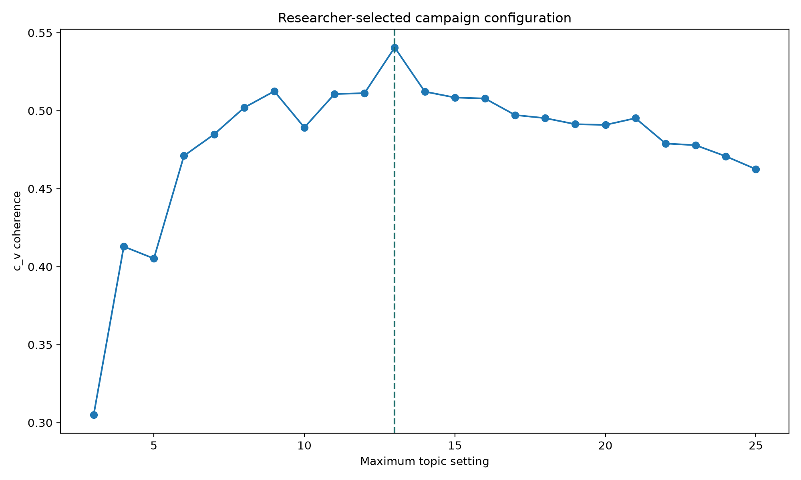

Campaign posts
June 16, 2015–November 8, 2016
Campaign discovery → presidential measurement
See the evidence.
Follow the decisions.
One archive, two analytic roles. Discover a vocabulary of themes during the campaign, then evaluate how reliably those themes can be measured in presidential communication.
Interpret themes. Independently annotate. Evaluate and accept the classifier.
Presidential posts
January 20, 2017–January 8, 2021
A reviewed starting point for interpretation.
The search evaluated 1,200 candidate settings. The researcher selected a 12-topic candidate after inspecting original-post evidence. Its cv coherence is 0.5406; the fitted model's assignments were verified after reconstruction and reload.
12campaign topics adopted
7,779campaign posts modeled
49.5%modeled posts unassigned
| Topic | Modal LLM name | Posts |
|---|---|---|
| 0 | Republican Primary Campaign Dynamics | 1,323 |
| 1 | U.S. Immigration and Nationalism During the 2016 Presidential Campaign | 758 |
| 2 | Campaign Rallies and Support in Key States | 577 |
| 3 | Criticism of Political Opponents and Email Controversy | 358 |
| 4 | Media Appearances and Personal Life Highlights | 238 |
| 5 | Terrorism and National Security Concerns During the 2015-2016 Presidential Campaign | 198 |
| 6 | Expressions of Gratitude and Positivity | 176 |
| 7 | Healthcare Policy and Obamacare Critique During 2015-2016 Campaign | 98 |
| 8 | Veterans' Affairs and Military Service | 83 |
| 9 | Trump Campaign Merchandise and Book Promotions | 43 |
| 10 | Macy's Boycott and Consumer Relations | 42 |
| 11 | Trump's International Golf Resorts and Openings | 31 |
The recorded run retains 500 completed naming votes per topic, including wording variation. Researchers read those proposals alongside posts and relevant literature; model consistency is not independent expert agreement.
Coverage matters as much as a score.
Of the 7,805 campaign records, 7,779 retain modeled tokens and 26 are excluded from discovery after preprocessing. The adopted solution assigns 3,925 posts to topics and leaves 3,854 unassigned. Those unassigned posts remain part of the interpretive evidence. These discovery outcomes do not reduce the later presidential denominator.
The maximum-coherence solution placed 99.5% of its assigned posts in one broad cluster. The researcher selected a more differentiated candidate for interpretation. The numerical winner, every candidate and the explicit selection record remain preserved; the score was not silently substituted.
Different stages establish different things.
| Evidence | What it establishes |
|---|---|
| Campaign model and naming ballots | Computed groups and proposed descriptions of campaign language |
| Human synthesis | Researcher-defined meanings, boundaries and a frozen codebook |
| Development and held-out evaluation | Classifier selection followed by an independent assessment of its errors |
| Overall presidential prevalence | Shares of target posting events assigned to accepted themes, including the residual |
Campaign discovery is complete. Human theme synthesis and independent classifier validation must finish before presidential prevalence is reported. Visitor drafts and small live experiments demonstrate operations; they do not supply research approval.
Reproduce the process in your own environment.
The repository connects each decision to a maintained Python script and a retained artifact. Reviewers interpret; agents execute the documented steps. The primary application estimates overall prevalence only, without period comparisons or causal claims. A fresh run may differ because probabilistic methods, model revisions and dependencies can change outputs.
Inspect the exact parameters and evidence
| Search | 50 draws × ceilings 2–25; seed 42 |
|---|---|
| Adopted draw / ceiling | 10 / 13 |
| UMAP | {"n_neighbors": 35, "n_components": 9, "min_dist": 0.05, "metric": "cosine"} |
| HDBSCAN | {"min_cluster_size": 25, "metric": "euclidean", "cluster_selection_method": "eom"} |
| Embedding | all-MiniLM-L6-v2; pinned model revision in the run manifest |
| Discovery API calls | 0 |
Application record · Every candidate · Model choice · Assignments · Preprocessing exclusions · Environment and hashes · Artifact checksums
